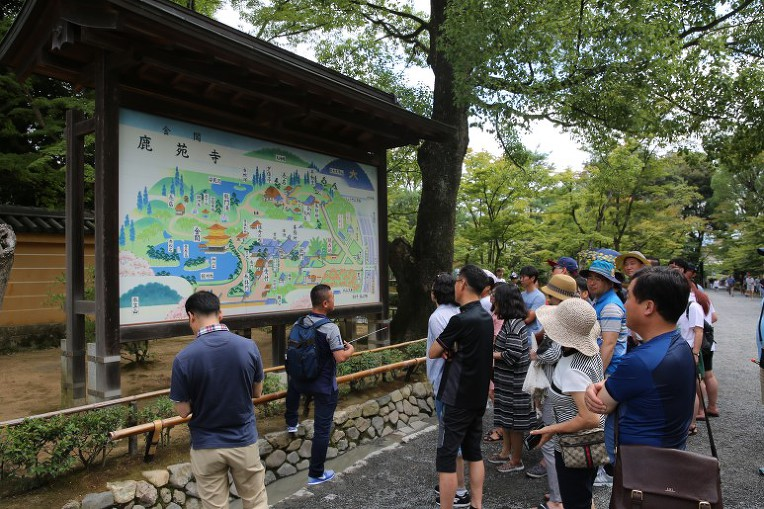
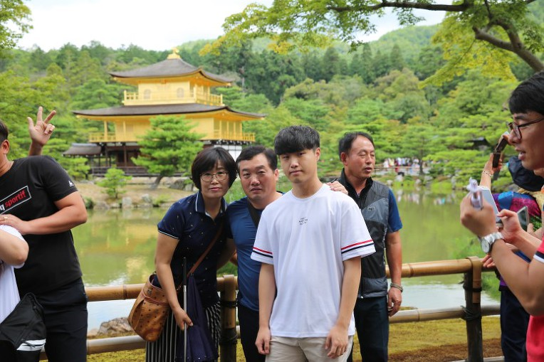
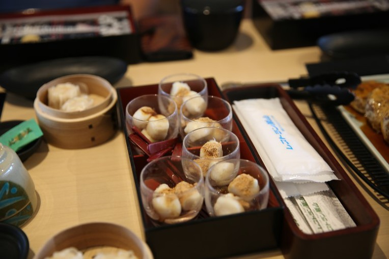

둘쨋날입니다.
어제 저녁 잠자리에 들면서 '조식이 맛있기로 유명한 리가로얄호텔'이라는 소릴 들어서인지..일어나자마자 조식뷔페로 향합니다

어때요? 분위기 증~~~~말 괜찮죠? 하하
드디어 맛보게된 리가로얄호텔 remone 식당에서의 아침식사

빵, 요거트, 낫토, 시리얼, 스테이크, 오믈렛, 과일, 디저트 등 굉장히 다양한 음식들이 준비되어 있었고 ㅎㅎ 맛있었습니다 !!!! 하하하
아침식사를 마치고 '일본의 역사와 전통을 가장 잘 접할 수 있는 도시' 교토로 이동합니다
금각사 정원
교토여행의 첫번째 방문지는 금각사 였습니다.


가족이 함께한 일본여행이어서 ! 더욱 짱~~!!
금박을 입힌 건물이 호수에 비치는데 참 아름답습니다.
길을 따라 걸으으며 금각사 정원의 모습을 보고 사진도 찍고~
어쩌요? 신혼같이 보기좋지라~우
겁나 웅장하고 이뻐브요 ㅡㅡㅡ
울 대표님... 넘 많은 사진을 찍으셨다는 ㅡㅡㅡ ㅎ
금각사는 각층마다 건축양식의 시대가 다르는게 특징인데요;;
이 가운데 2층과 3층은 옻칠을 한 위에 금박을 입혔다고 하네요
금각사?
원래 명칭은 로쿠온지[鹿苑寺(녹원사)]이지만, 금박을 입힌 3층 누각의 사리전(舍利殿)이 긴카쿠[金閣]라는 명칭으로 더 널리 알려지게 되어 흔히 긴카쿠지[金閣寺]라고 불리게 되었다고...
아라시야마 대나무숲
영화 속 배경 같은 아라시야마 대나무숲, '치쿠린'
마음이 편해지는 곳, 치쿠린 아라시야마는 '교토여행의 필수'라 불리울만 했어요

"오메 ! 대나무숲을 걸었더만 마음이 편안해져브요"


배고픙께 밥먹읍시당 !
오늘 점심은 두부 ^^
두부전골, 두부스테이크, 여러 가지 반찬이 준비되어 있었어요~



니넨자카 산넨자카 거리 구경
교토라는 도시 전체를 한국의 경주와 비슷하다 말한다면,
니넨자카, 산넨자카 주변은 서울 북촌? 음....전주한옥마을?
뭐 그런 비슷하다는 느낌을 받았어요
산넨자카와 니넨자카는 일본의 전통가옥이 잘 보존되어 있었구요.
청수사(기요미즈데라)
거리를 따라 쭉 올라가서 ‘교토 여행객에게 가장 인기 있는 방문지’라는 청수사로 향합니다.
청수(淸水)는 '성스러운 물'이라는 뜻으로 맨 왼쪽의 물은 지혜, 중간은 사랑, 오른쪽이 장수에 좋다고 전해져 사람들의 발길이 가장 많이 이어지는 곳이기도 하다.
" 자자 모여서 한장 박아븝시다 !
자~ 하나둘셋 하믄 외쳐부시요~잉
하나 둘 셋"
"대광화이팅 !! "
후시미이나리 타이샤

길게 이어진 붉은 도리이길로 유명한
후시미이나리 타이샤 !
영화 '게이샤의 추억'이 떠오릅니다
"붉은 주칠을 한 토리이가 산기슭부터 꼭대기의 후시미 이나리 신사까지 구불구불 이어진다. 약 4㎞에 이르는 길을 걸어 올라가다 보면 고요한 연못과 작은 폭포, 아름다운 묘지들이 즐비하다"
도톤보리 구경 호젠지 절 구경
저녁식사를 위해 식당이 위치한 도톤보리로 이동하였습니다.

식당으로 이동 중에 호젠지라는 작은 절도 보구요~
초밥 정식
저녁 식사는 분위기 좋은 식당에서 스시 정식을 먹었습니다~

"역시 일본에서 먹는 스시가 제맛이여"
2차로 맥주 한잔씩~!
식사를 마치고 호텔에 돌아와 주변 술집에서 직원들끼리 모여 2차로 맥주 한잔씩했습니다~

유니버셜 스튜디오

유니버셜 입구
유니버셜 입구가 보입니다. 입구가 보이자마자 기분 업!
"입구만 봐도 즐겁네요 ㅎㅎㅎㅎㅎㅎ"
지구본
지구본 앞에서는 사진을 찍기 위해 사람들이 몰려있어요~
지구본 앞 인증샷은 필수!
미니언파크
개장한지 얼마안된 따끈따끈한 구역으로 아이돌한테 굉장히 인기가 많은 곳입니다~
미니언즈 상품들도 구경~!
스파이더맨 3D
유니버셜에서 인기있는 어트랙션 중 하나인 스파이더맨 3D!
쥬라기 공원
쥬라기 공원 어트랙션 근처에서는 공룡 모형들이 나와 공연을 하더라구요~
정말 현실감있게 만들어져서 감탄~~!
퍼레이드
이날의 하이라이트는 여름 한정 “미니언 워터 서프라이즈 퍼레이드”! 아이들이 좋아하는 미니언즈가 퍼레이드카를 타고 이동하네요. 퍼레이드 시작 전부터 이미 많은 사람들이 퍼레이드 경로를 찾아 물총을 들고 기다리고 있었습니다~~